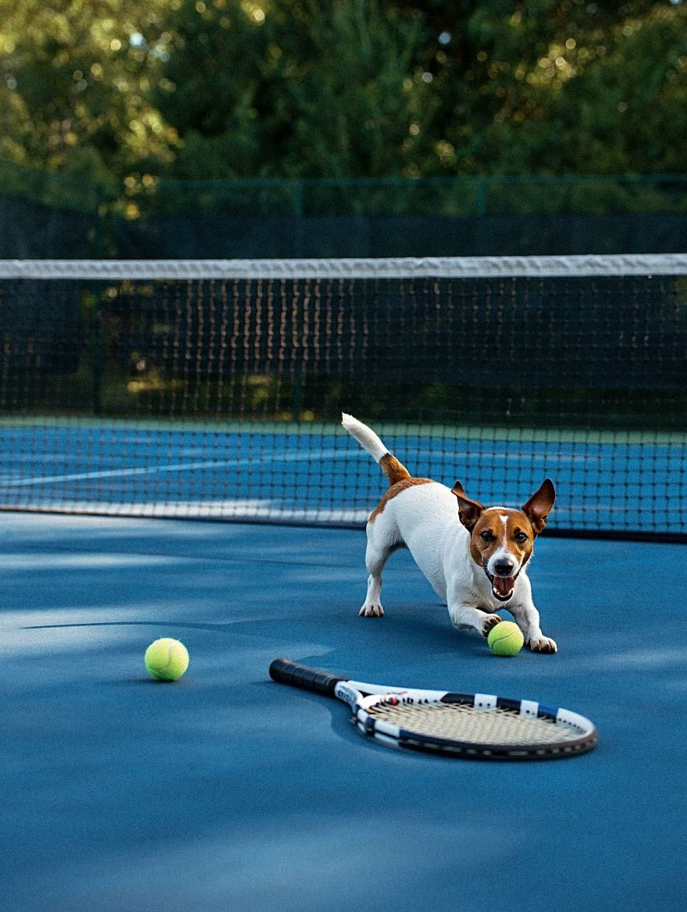

Vzor štruktúry článku – ako vyzerá článok pre AI citácie

Sumár
Vzorový článok ukazuje rozloženie, ktoré AI vyhľadávače citujú najčastejšie: priamu odpoveď v prvých 60 slovách, 3 až 6 sekcií s nadpisom v tvare otázky, aspoň 1 číslo v každej sekcii, porovnávaciu tabuľku a zdroje. Text je zástupný, slúži len na kontrolu šablóny a redakcie.
Kľúčové body
- Krátka odpoveď má 40–60 slov a začína priamou odpoveďou
- Každá sekcia má 200–400 slov a aspoň 1 číslo so zdrojom
- Aspoň 3 zdroje s odkazom na primárny zdroj
- Najčastejšia chyba: dlhý úvod namiesto odpovede
Čo je vzorový článok?
Vzorový článok je zástupný koncept, ktorý ukazuje rozloženie článku pre AI citácie. Nemá skutočný obsah. Slúži na kontrolu, ako šablóna vyzerá na webe a ako ju hodnotí redakcia.
Ako vyzerá sekcia, ktorú AI dokáže citovať?
Sekcia, ktorú AI dokáže citovať, začína tučnou vetou s odpoveďou na nadpis. Za ňou nasleduje vysvetlenie, dôkaz a príklad. Zástupný text: podľa [zdroj, rok] tvorí 44 % citácií text z prvých 30 % článku. Sekcia má mať 200 až 400 slov, preto tu redakcia ukáže upozornenie na dĺžku.
| Časť článku | % |
|---|---|
| Prvých 30 % | 44 % |
| Stred článku | 31 % |
| Záver článku | 25 % |
Zdroj: zástupný zdroj
Šablóna A vs šablóna B: porovnanie
Šablóna A je vhodnejšia pre články s jednou hlavnou otázkou.
| Kritérium | Šablóna A | Šablóna B |
|---|---|---|
| Pre koho | jedna otázka | viac otázok |
| Hlavná výhoda | rýchla odpoveď | širší záber |
| Verdikt | odporúčaná | len výnimočne |
Šablóna A vyhráva pri úzko zameranej téme.
Ako napísať článok: 3 kroky
Článok vznikne v 3 krokoch: výskum, koncept a kontrola v redakcii.
- Skopíruj šablónu. Súbor _template.md premenuj na slug článku.
- Vyplň polia. Krátka odpoveď, kľúčové body, zdroje a sekcie.
- Spusti build. Príkaz python3 granula/blog/build.py ukáže chyby a upozornenia.
Časté otázky
Môže byť článok kratší ako 1 000 slov? Áno. Podľa analýzy citácií má 53 % citovaných stránok menej ako 1 000 slov.
Treba schema markup? Nie ako GEO páku. Build ho pridáva len ako SEO hygienu.
Kde vidím náhľad? V redakcii na adrese /granula/admin-blog/.
Zhrnutie
- Vzor ukazuje rozloženie, nie obsah.
- Skutočný článok musí prejsť kontrolou bez chýb.
- Po prvom skutočnom článku tento vzor zmaž.
Vzor: záverečná ponuka k téme článku
Text záverečnej ponuky sa píše ku každému článku zvlášť cez polia cta_title, cta_text a cta_button.


Zdroje
- GEO: Generative Engine Optimization – Aggarwal a kol., KDD 2024 – arxiv.org/abs/2311.09735
- [Zástupný zdroj – vydavateľ, rok] – example.com/zdroj-2
- [Zástupný zdroj – vydavateľ, rok] – example.com/zdroj-3